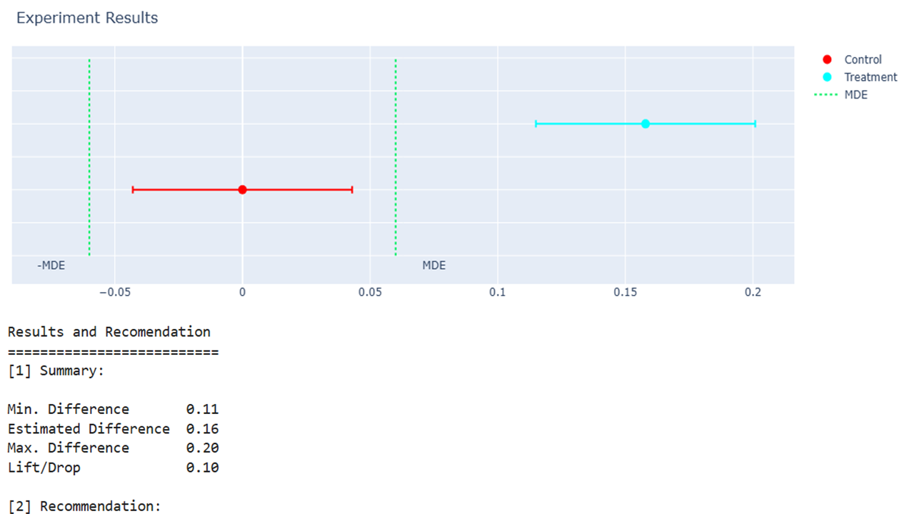

xplendid

An AI-assisted web application for design, analysis and decision-making on A/B tests.
IMDb Recommender

An end-to-end movie recommender web application built on IMDb’s Top 250 movies, featuring an automated ETL pipeline, caching for fast data retrieval, a content-based recommendation engine, and a responsive web interface for real-time search, exploration, and personalized movie suggestions.
ablisk
A Python module for design, analysis, and decision-making of A/B tests. This framework acts as the statistical engine of xplendid, providing useful features such as sample size calculation as well as visualization and recommendations based on experiment results, turning the A/B testing workflow into a more accessible a seamlessly task even for non-stats-savvy.

Car Selling Price Predictor

An application for getting instant and data-driven price estimates for used cars! 🚗💰
Powered by a Feedforward Neural Network and Bayesian Optimization, this
interactive tool turns car attributes into accurate selling price predictions — fast,
simple, and reliable.
Angola Socio-Economic Stats
A dashboard presenting some of the most important socio-economic statistics of Angola — from GDP to Exchange Rates. This also includes a word cloud formed by the most recent and relevant business and economy headlines from local newspapers, namely Expansão, Novo Jornal, and Valor Económico.